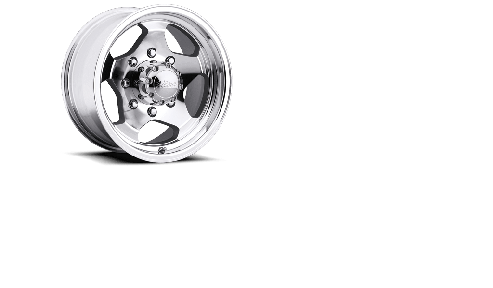

ITS Helped Us Collaborate
Put a Bunch of Smart People in a Room
 Above, from left to right: smart people in a room
Above, from left to right: smart people in a room
Put a Bunch of Smart People in a Room
Below, from left to right: stuff getting done

Typical Development Process

Typical Development Process
Lack of Collaboration
So What Should We Do?
How to avoid reinventing the wheel?
What's makes the web great?
The Web is a Series of Tubes Components
Let's create some reusable components.
But wait — let's not reinvent the wheel again.
Pixel-Perfect Photoshop Comps
Pixel-Perfect Photoshop Comps
RWD Can Be Hard
It takes a lot of time
It's fundamentally different
RWD is a moving target
Don't reinvent the wheel again
Future-Friendly Websites
What device will you be unwrapping tomorrow?
What device will you be unwrapping two holidays from now?

Is There Anybody Out There?
Foundation
Foundation
Mobile First
Semantic Markup
Library of JaveScript Plugins
“The most advanced responsive
front-end framework in the world.”
- Zurb
So We Started Making Stuff
“Thats sounds terrific and everything, but how can I possibly use these super amazing, technologically advanced components on MY sites and apps?”
It's actually based on a new web framework...
The New Web Framework
Is Responsive
Is Modern
Is Whimsically Magically Magnificent
Built for New York State
Thanks for Listening
Luke Charde
Department of Labor
Craig Patik
Department of Taxation & Finance
Eric Steinborn
Division of Criminal Justice Services


 Photo credit:
Photo credit:  Photo credit:
Photo credit: